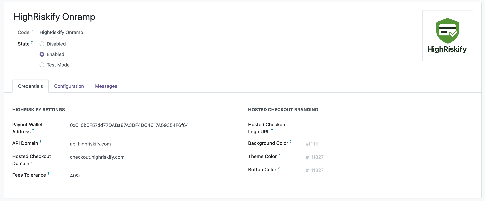

HighRiskify Onramp extends Odoo eCommerce with a hosted checkout integration and transaction status synchronization workflow. The module creates transaction references from Odoo orders, redirects customers to the configured checkout experience, receives status updates, and synchronizes related Odoo records.
|
01
Hosted CheckoutRedirect customers from Odoo checkout to a configured hosted checkout experience. |
02
Status SyncReceive transaction status updates and synchronize payment information back into Odoo. |
03
Odoo RecordsUpdate related transactions, orders, quotations, and invoices where applicable. |
Hosted Checkout IntegrationSend customers from Odoo checkout to the configured checkout destination and return status information to Odoo. |
Odoo eCommerce SupportDesigned for Odoo Website and eCommerce checkout flows with simple payment provider configuration. |
Session ManagementCreate transaction references and checkout sessions from Odoo orders to initiate the hosted workflow. |
Status SynchronizationReceive transaction status notifications and update Odoo payment transactions and related records. |
Order Activity TrackingRecord transaction events, status changes, callback updates, and related information in Odoo order chatter. |
Flexible ConfigurationConfigure endpoints, checkout URLs, labels, descriptions, branding, and operational settings from Odoo. |
Invoice IntegrationSynchronize transaction status with Odoo quotations, sales orders, and invoices where applicable. |
Multi-Website CompatibilityBuilt for Odoo Website deployments and compatible with multi-website environments. |
HighRiskify Onramp provides a streamlined checkout workflow with support for multiple digital payment options through a single integration. Available payment methods, regions, transaction limits, and consumer-side fees may vary depending on the configured checkout services, customer location, and payment method availability.
Card PaymentsCard-based checkout options may be available where enabled by the configured checkout service. |
Bank RailsBank transfer or local payment rails may be available depending on region and provider support. |
Digital WalletsDigital wallet options may appear where supported by the configured checkout destination. |
1. Customer Selects HighRiskifyThe customer selects HighRiskify during the Odoo checkout process. |
2. Checkout Session Is InitiatedThe module creates the required transaction references and initiates the checkout workflow. |
3. Customer Is RedirectedThe customer is redirected to the configured checkout destination. |
4. Status Updates Are ReceivedThe module receives status notifications and synchronization updates from the configured workflow. |
5. Odoo Records Are UpdatedRelated transaction, sales order, quotation, and invoice records are updated automatically within Odoo. |
Configure HighRiskify integration settings directly within Odoo. Available options include service endpoints, checkout destinations, display labels, descriptions, branding elements, status synchronization settings, and other module configuration options.

HighRiskify Onramp helps merchants connect Odoo with a hosted checkout workflow while keeping order, transaction, quotation, and invoice status synchronized inside Odoo.
This module connects Odoo with HighRiskify integration services to support checkout redirection, transaction reference creation, status synchronization, callback handling, and related operational functionality.
During normal module operation, limited transaction and order-related information may be exchanged with HighRiskify services so the integration can initiate the checkout workflow, receive status updates, assist with transaction tracking, and synchronize the corresponding Odoo records.
Data exchanged may include order references, invoice references, transaction amounts, currency, selected payment method, status information, customer information where available, session identifiers, callback notifications, merchant website information, transaction identifiers, and system-generated timestamps.
Merchants are responsible for reviewing, configuring, and using the module in accordance with their own privacy, compliance, and operational requirements. Privacy Policy: https://highriskify.com/privacy-policy
Install the module, update the Odoo Apps list, activate HighRiskify Onramp from Payment Providers, configure the required HighRiskify integration settings, and enable the provider for your Odoo website checkout.
For setup help, configuration support, or bug reports, please contact HighRiskify support.